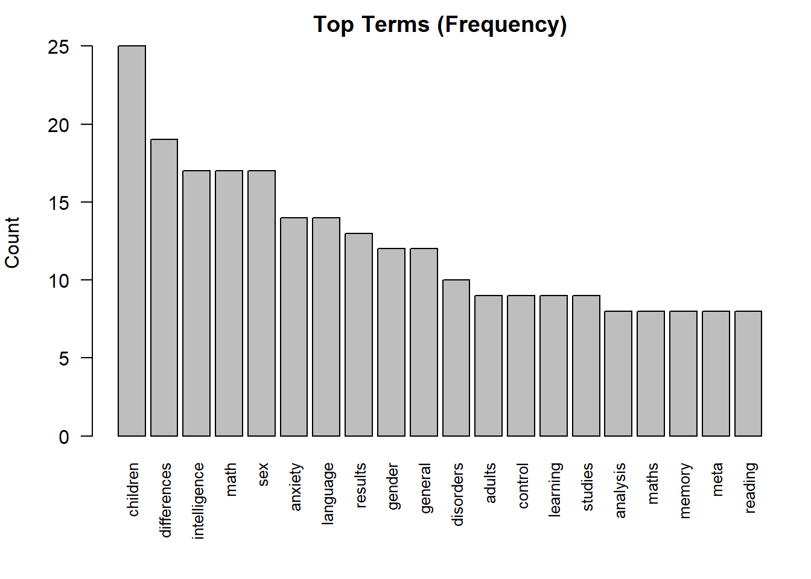
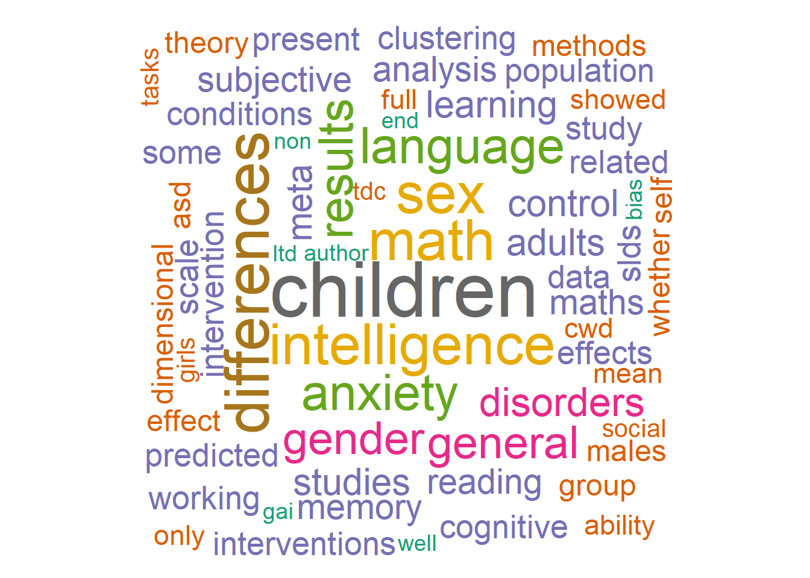

# recommended if not already done
# install.packages("wordcloud") # for the word cloud
# install.packages("RColorBrewer") # just for nice color palettes
# load required packages
library(wordcloud)
library(RColorBrewer)Exercises – Basics of Text Mining with R: Creating a Word Cloud
Basics of R for Data Science
Create a colorful Word Cloud that represents the corpus of research published by your supervisor (or any other researcher with a sufficiently large corpus of publications), and impress them! 🙂
This exercise goes a bit beyond the scope of the present introductory course, but it is a nice challenge for more advanced R users. It integrates multiple skills: importing data, manipulating text and strings, performing basic string operations, visualizing data, exporting figures.
Scenario
We will work with a small text corpus derived from research publications. The goal is to build a clean text workflow and create a colorful word cloud that highlights the most frequent and informative terms.
The dataset contains titles and abstracts of research outputs. We will combine and clean the text, compute word frequencies, and visualize the result with a word cloud. The workflow mirrors the style used in the Python sentiment exercise, but here the focus is on basic text mining in R.
We will:
- Import a CSV of publication metadata taken from Scopus.com,
- Clean the text,
- Tokenize and remove stopwords,
- Compute and inspect term frequencies,
- Build and export a word cloud image.
Preliminary Steps
Import and Inspect Dataset
You can download an example dataset here: scopustoff.csv
It includes publication titles, abstracts, and possibly keywords. We will focus on titles and abstracts, since they usually summarize the core ideas.
df = read.csv("wordcloud/scopustoff.csv", stringsAsFactors = FALSE)
nrow(df) # how many records[1] 10ncol(df) # how many columns[1] 4names(df) # column names[1] "Title" "Link" "Abstract" "Author.Keywords"head(df$Title) # preview first few titles[1] "Clusters that are not there: An R tutorial and a Shiny app to quantify a priori inferential risks when using clustering methods"
[2] "Understanding sex/gender differences in intelligence profiles of children with Autism: A comprehensive WISC meta-analysis"
[3] "Maths anxiety and subjective perception of control, value and success expectancy in mathematics"
[4] "In emotion and reading motivation, children with a diagnosis of dyslexia are not just the end of a continuum"
[5] "The Intellectual Profile of Adults with Specific Learning Disabilities"
[6] "Sex/gender differences in general cognitive abilities: an investigation using the Leiter-3" If your file uses different column names, adapt the code below accordingly. We will assume there are columns named "Title" and "Abstract".
Combine Text Fields into One Corpus
We first merge titles and abstracts into a single text field. This will give the word cloud denser and more informative content.
# better replace possible missing values with empty strings
df$Title[is.na(df$Title)] = ""
df$Abstract[is.na(df$Abstract)] = ""
# combine Title + Abstract into a single field
df$text_full = paste(df$Title, df$Abstract, sep = " ")
# collapse all documents into one corpus string
corpus = paste(df$text_full, collapse = " ")
nchar(corpus) # total number of characters[1] 17468Clean and Normalize the Text
We apply a series of base R transformations: lowercase conversion, removal of punctuation and digits, trimming extra spaces, and accent normalization (accents are coded quite inconsistently in international datasets: better to remove them all).
# to lowercase
corpus = tolower(corpus)
# remove punctuation and digits
corpus = gsub("[[:punct:]]", " ", corpus)
corpus = gsub("[[:digit:]]", " ", corpus)
# normalize whitespace
corpus = gsub("\\s+", " ", corpus)
corpus = trimws(corpus)
# optional: simple accent folding (basic replacement)
corpus = chartr("àèéìòóù", "aeeioou", corpus)Tokenize and Remove Stopwords
We split the text into words/tokens, and remove common stopwords and very short tokens that add little information. You can adjust the stopword list to fit your needs.
# split into tokens (vector of words)
tokens_list = strsplit(corpus, " ", fixed = TRUE)
tokens = unlist(tokens_list)
# define a basic English stopword list (extend as needed)
stop_basic = c(
"the","and","to","of","a","in","that","is","on","for","with","as","it","was",
"at","by","an","are","be","this","or","from","which","not","also","has","have",
"had","were","their","will","can","if","would","we","our","you","your","they",
"them","but","about","more","than","between","into","using","use","used","may",
"based","these","those","there","such","however","while","within","both","each"
)
# remove stopwords
tokens = tokens[ !(tokens %in% stop_basic) ]
# remove very short tokens (<= 2 characters)
tokens = tokens[ nchar(tokens) > 2 ]
length(tokens) # how many tokens (words) remain[1] 1558Compute Word Frequencies
We compute term frequencies with table(), sort them, then inspect the top terms. This helps validate that cleaning was effective.
freq = table(tokens)
freq = sort(freq, decreasing = TRUE)
# inspect the top 20 terms
head(freq, 20)tokens
children differences intelligence math sex anxiety
25 19 17 17 17 14
language results gender general disorders adults
14 13 12 12 10 9
control learning studies analysis maths memory
9 9 9 8 8 8
meta reading
8 8 Quick Diagnostic Plot of Top Terms
A simple bar plot is useful to check if the distribution makes sense before building the word cloud.
top_n = 20
top_terms = head(freq, top_n)
par(mar = c(6, 4, 2, 1))
barplot(
height = as.numeric(top_terms),
names.arg = names(top_terms),
las = 2, cex.names = 0.8,
main = "Top Terms (Frequency)",
ylab = "Count"
)
Question: do the most frequent terms match your expectations of the author’s main research themes?
Build the Word Cloud
The wordcloud() function requires:
- a vector of unique words,
- a vector of their frequencies.
We will provide a palette and set a reproducible seed.
set.seed(123)
# extract words and frequencies
words = names(freq)
counts = as.numeric(freq)
# choose a color palette
pal = brewer.pal(8, "Dark2")
# draw the word cloud
wordcloud(
words, counts,
scale = c(4, 0.8), # largest to smallest font sizes
max.words = 200, # limit the total number of words
random.order = FALSE, # place most frequent words at the center
rot.per = 0.15, # proportion of words with vertical orientation
colors = pal,
use.r.layout = FALSE
)
Export the Word Cloud as an Image
Before exporting, experiment interactively with wordcloud() until you like the look. Then save it to file.
# save to PNG
png("wordcloud/wordcloud_output.png", width = 1600, height = 900, res = 200)
set.seed(123)
wordcloud(
words, counts,
scale = c(4.5, 0.9),
max.words = 250,
random.order = FALSE,
rot.per = 0.12,
colors = pal
)
dev.off()png
2 # alternatively save to PDF (vector format, useful for print)
pdf("wordcloud/wordcloud_output.pdf", width = 11, height = 7)
set.seed(123)
wordcloud(
words, counts,
scale = c(4.5, 0.9),
max.words = 250,
random.order = FALSE,
rot.per = 0.12,
colors = pal
)
dev.off()png
2 What could you do now?
- Redo everything with your own supervisor’s titles & abstracts.
- Combine additional fields, for example keywords, to widen the corpus… or even import entire pdf texts (if you have them all somewhere).
- Divide into subsets and compare clouds, for example early vs recent papers, to visualize what changed over time.
- Try alternative visualizations of term frequencies, for example lollipop charts or word clouds with different palettes.
- Try with bigrams (pairs of words) instead of single words to capture common expressions.
Preprocessing choices matter
Text cleaning and tokenization have strong effects on the final word cloud. Domain-specific stopwords, stemming choices, and the inclusion of titles vs abstracts can bias which terms appear most salient. Always document your preprocessing steps.